In 2020, we are planning a trip to the land of the rising sun – Japan – a bit of a taster trip really as Japan is too vast to cover it all in such a short time. Japan was on my personal bucket–list of places to go to so I am excited to be doing this!
As for the Mexico/Cuba ebook, this eBook is divided into 3 main sections, namely:
If I think of any other stuff I'll put it into appendices at the end. So, without further ado, let's crack on!
Well, before we start our trip, there are a few things to think about and do. I have split these up as follows:
I have also included as an Appendix what I envisage packing for the trip (excluding clothing - I am sure you can make up your own minds about clothing!).
We are visiting Japan in late March/early April so we can catch the 'blossom season' – a very popular tourist time of year for foreign tourists and for the Japanese themselves.
This is one of the best times to visit as it precedes the major foreign tourist season from May through September. We fly out of the UK on Friday 22nd March and return on Sunday 6th April.
The weather in Japan for the time of our trip is very similar to UK weather – quite cool with some rainfall, best sums it up. So, not hot and occasional nights when overnight temperatures are cold. Take decent overnight gear and a light waterproof for showers is my best advice. Layers will be the order of the day.
Japan is a country of approx. 121 million people and nearly four hundred thousand square kilometres in size made up from 6852 islands. 97% of the land area is taken up by the 5 main islands (Hokkaido, Honshu, Kyushu, Shikoku, and Okinawa); for comparison, the UK has a population of approaching 70 million people crammed into nearly 250,000 square kilometres of land mass (and we only have 136 permanently inhabited islands).
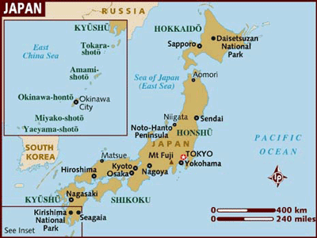
Our holiday will be almost exclusively on the main Honshu island:
Do check with your GP about what innoculations they advise for your personal circumstances for this trip. They will normally check for whether you are up to date with vaccines for cholera, typhoid, Hepatitis A and Tetanus.
Make sure and get them to bring your vaccination record card up to date and store it somewhere safe.
Hampton GP surgery also gave me two web sites to check:
From those web sites for Japan: travellers should be up to date with routine vaccination courses and boosters as recommended in the UK. These vaccinations include for example measles-mumps-rubella (MMR) vaccine and diphtheria-tetanus-polio vaccine. We are unlikely to need a vaccine for Japanese encephalitis as we are not spending protracted time in rice fields, swamps or marshes. Similarly, rabies risk is low in Japan and confined to bites from bats so we again will probably not have a course of rabies vaccine. We should not eat or drink unpasteurised milk products to avoid tick-borne encephalitis, but again this is marked as very low risk and no vaccine recommended.
There is no mentioned risk of Yellow Fever in visting Japan.
Japan is in a different time zone to the UK - they are 9 hours in front of us.
Your passport should be valid for the proposed duration of your stay. No additional period of validity beyond this is required.
We are travelling a significant distance during this holiday, both by air and by road. The table below shows our two long-haul flights to and from Japan. The remainder of the holiday travel within Japan is by road and rail.
| Air Journey | Distance (miles) |
|---|---|
|
Birmingham to Osaka via Dubai 22nd March Flight 16 from Birmingham to Dubai Depart: 1430, Arrive: 0035 on 23rd March Flight 316 from Dubai to Osaka Depart: 0340, Arrive: 1750 |
8203 |
| Tokyo to Birmingham via Dubai 6th April Flight 319 from Tokyo to Dubai Depart: 2200, Arrive: 0415 Flight 15 from Dubai to Birmingham Depart: 0800, Arrive: 1235 |
8453 |
| TOTAL air miles | 16656 |
N.B.
We will also have scheduled journeys by road/rail as part of the tour. excluding any we do ourselves when we have time at leisure:
Lesley and I will each have a "travel pack" with printed copies of our travel documentation plus other stuff to do with the trip. We will also have our Japanese currency split up between us.
-->Japan has the yen as its unit of currency.
Although Japan is high-tech, we have been advised to take sufficient cash as many places e.g. some restaurants, shops etc. do not accept debit or credit card payments. Weird eh? As with any holiday abroad, you are recommended to let your bank know that you will be using your card(s) in Japan before you leave.
Current exchange rate (as at Saturday 14 September) is 135 Yen to the pound.
Credit cards (and pre-paid credit cards such as FairFX) are accepted for certain things in Japan e.g. trains tickets, hotels (maybe not ryokan, though?)
Tipping is not customary in Japan. In fact, it can be considered rude and insulting in many situations. Most Japanese restaurants require customers to pay for their meals at the front register, rather than leave money with the waiter or waitress. Tipping also isn’t required for cab or bus rides and many hotel services. You will probably receive some of the best service in the world here … but this is about people doing their job with pride rather than hoping for a tip.
Nothing special here except it says there is a 60ml max on perfume being brought into Japan (?)
On the return to the UK, these are selected allowances:
In Japan, free wifi has been very rare in the past. Most hotels nowadays in Japan offer free internet in their guest rooms. Access is usually provided as a wireless network or wired internet via LAN cable. Internet in the room is somehat less common at ryokan. Instead, some ryokan provide wireless internet or a public computer in their lobby.
Thanks to efforts by businesses and governments, public Wi-Fi networks for free use by foreign tourists have become quite numerous. Tourists will encounter these networks at international airports, major railway stations (including all Yamanote Line stations and many shinkansen stations), inside an increasing number of trains and buses, selected coffee, fast food and convenience store chains and many tourist information desks.
Ian Roberts never bought a SIM card for use in Japan and we probably wont need one either.
If we think we will need to use our phones in Japan, we may have to purchase some Japanese SIMs (Edward and Mike did and said they were fantastic). Prices for data–only SIM cards look to be about £40 with those allowing voice calling and texts starting at £50.
We may or may not be able to print our boarding cards for our return flight to the UK when we are away. As for Mexico/Cuba we may be able to download the airline app and just have a downloadable boarding pass.
The voltage in Japan is 100 Volt, which is different from North America (120V), Central Europe (230V) and most other regions of the world. Japanese electrical plugs and outlets resemble North American ones. Plugs come in various versions, but most commonly they are non-polarized and ungrounded with two pins. Our current blue travel adaptors MAY be OK for use with Japanese voltage - this will need checking.
| 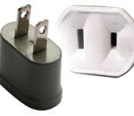 | 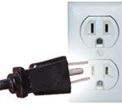 |
| Type A Socket | Type B Socket |
|
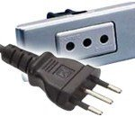 |
| Type C Socket | Type L Socket |
So we will need travel adapters and (maybe) voltage adapters as well so we can have our 4-way blocks plugged in at our various accommodations. As menioned above, the existing blue travel adaptors MAY be OK.
-->This section is preliminary information and a more ordered trip itinerary will be provided here when we are sent it.
Flight departure time from Birmingham Airport is approx. 1430 so we will probably get to the airport between 1130 and 1230 to check in. LONG FLIGHT.
There is a layover of 2-3 hours in Dubai but our luggage should be transferred across for us. Don't forget to watch your data usage in Dubai – remember my £80 bill from one holiday!
We will travel to the famous Golden Pavilion (above) at some point in the day as part of the tour. We will also be touring the fanous Gion district in the evening and trying to spot geisha at work. This would also be the time to sample Pontocho Alley (Edward and Mike recommendation) – food stuff.
Apparently, this is one of Japan's most famous and historically significant temples and a landmark of Nara. The temple was constructed in 752 as the head temple of all provincial Buddhist temples of Japan and grew so powerful that the capital was moved from Nara to Nagaoka in 784 in order to lower the temple's influence on government affairs.
Temple visitors will also encounter some deer from the adjacent Nara Park, begging for shika senbei, special crackers for deer that are sold for around 200 yen (£1.50).
Lots of potential things to do here, just down to practicalities how many we want, or can, do.
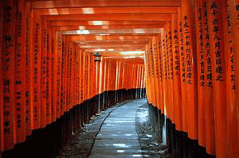The Fushimi Inari shrine is famous early stop point reached by walkways lined with Tori gates up the hillside to the shrine itself (see photo above). All advice is to see this first thing in the morning - light, crowds?
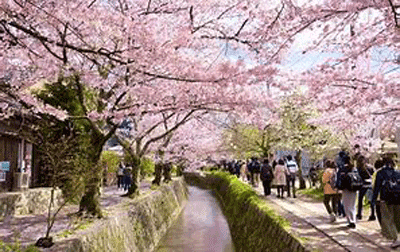Here the Philosophers Walk (or Path) is a great place to enjoy the cherry blossoms. in eastern Kyoto. Small coffee shops exist on this walk/path. 2km long and would take about 1.5 hours to walk both ways.
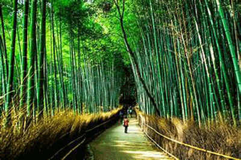We also have the bamboo forest (see above) and many other temples/shrines to see. Or just chill and wander round Kyoto town itself.
Apparently lots of well established and easy–to–follow walking tours in Kyoto. Ian Roberts has some maps to give us some ideas.
Starts with a 2 hour ride on the bullet train (Shinkansen) from Kyoto to Hiroshima. While in Hiroshima, we have a boat trip to Miyajima island – past the majestic floating Tori Gate – and the Hiroshima Peace Park, returning to Kyoto late afternoon.
Travel by more traditional Japanese railways to Takayama (4 hours). In the afternoon, we visit the Hida Folk Village, located a short walk from our accommodation (our first experience of a Japanese ryokan). We are here for 2 nights.
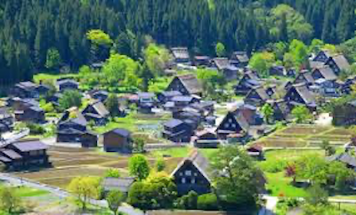Meals included: Dinner
Morning guided orientation tour of Takayama folowed by free afternoon to explore until the evening banquet meal at the ryokan.
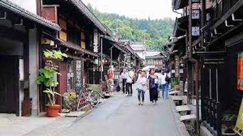Meals included: Breakfast, Dinner
First travel to Tsumago and (optionally) join tour guide for a walk along the Naksendo Way. Scheduled for 1 hour but Ian and Jenny and some others from their tour group did a longer walk, almost all the way to Matsumoto.
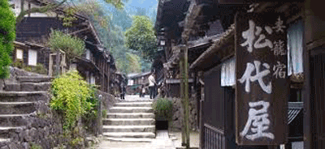 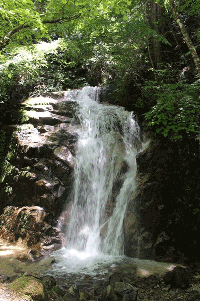After Tsumago, continue travelling on by rail to Matsumoto which is reached in the late afternoon - perfect to stroll out and catch the impressive castle lit up at night!
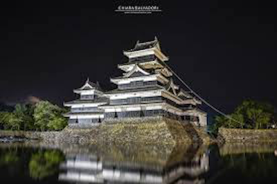Meals included: Breakfast
Morning guided visit to the Crow Castle (Matsumoto). Return to Matsumoto rail station for afternoon journey to the hot spring area of Yudanaka where the accommodation is our second ryokan.
Meals included: Dinner
The morning has a 30–minute walk to the hot springs area of the Snow Monkey Park where we may see these macaque monkeys "bathing" in the hot springs.
This afternoon we travel from Yudanaka to Tokyo by Shinkansen (4 hours) arriving in Tokyo in the early evening.
After checking into the hotel we have a short guided orientation tour of Tokyo by night.
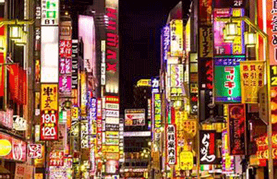Meals included: Breakfast
An optional trip to Hakone using our Japan rail pass looks good – may get a view of Mount Fuji on a clear day (bit like our views of Popacatapetl in Mexico). Ian and Jenny did a few nice garden walks in Hakone and he has lent us copies of the maps
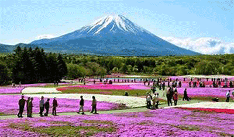 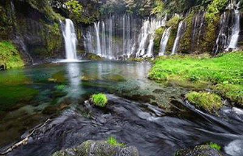Other things to see include Shibuya crossing (pedestrian), seen on many TV programmes.
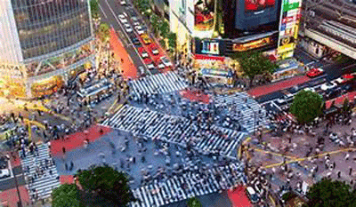Meals included: NONE
Full day city tour of Tokyo. We will travel on their tube system to visit many attractions including the famous Senso-Ji temple in the more traditional area of Asakusa and one the many large parks. There is also free time to do what we want to do e.g. a visit up the SkyTree Tower, second only in height to the CN Tower (when it was constructed).
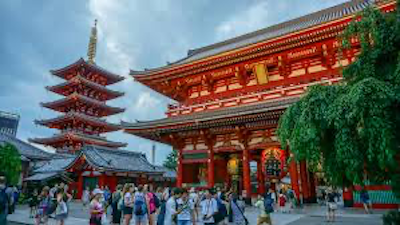Meals included: NONE
Lots to see here - so busy and yet nowehere near as noisy as UK and US cities (apparently)! For example, the Shinjuku area near Tokyo's station. Include Izakaya tour (An izakaya is a type of informal Japanese pub. They are casual places for after-work drinking. They have been compared to Irish pubs, tapas bars and early American saloons and taverns.) and Robot Restaurant (not a restaurant) - EDWARD
Return flights to the UK are at approx. 2300 from Narita airport so we will need to start out for there round about 7pm local time (given Tokyo traffic). Rest of the day is our own provided we can arrange a room drop for our cases. If we are very fortunate, we may also be able to come back and freshen up for the journey before leaving.
Should arrive back in Birmingham for about mid-day on 6th April – worn out I bet! As for the outward journey, there is a layover of 2-3 hours in Dubai so keep a wary eye on your data usage on your phone!
Typical (stereotypical?) Japanese guest house stay. Also try hot spring bathing and banquet dinner EDWARD
Another EDWARD recommendation - in Kyoto
For what it's worth, my personal holiday essentials list is included below. Adapt for your own needs, of course!
N.B. Blood group added in pre Japan trip (as operator needed it?!)
| Name on Passport | Passport No. | Expiry Date | Blood Group |
|---|---|---|---|
| John Brinley Cable | 534663386 | 1 May 2026 | AB+ |
| Lesley Anne Cable | 556517863 | 18 February 2029 | O+ |
| Sophie Vinetta Cable | 575491003 | 11 January 2030 | A+ |
| Emily Beatrice Cable | 527280869 | 6 September 2025 | B+ |
Don't forget to weigh case – safe maximum is 20KG. Camera (in backpack) is hand luggage
Note for neighbours
N.B.
* optional – depends on the holiday
** may purchase in Duty Free at airport
*? may be packed with family toiletry bag